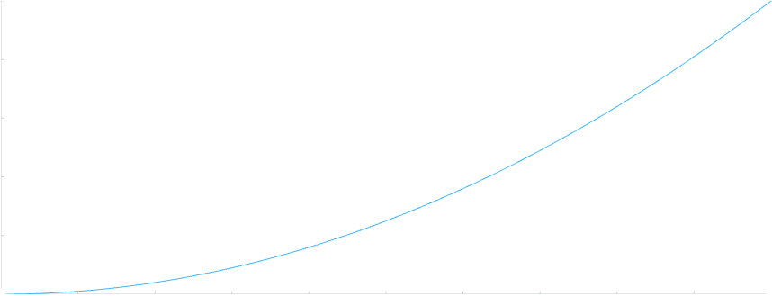

SYNTAX / LANGUAGE REFERENCE
From a value to a calculation.
Name a value, put a calculation in a scope, then reuse it as a function. Add dimensions when the same calculation needs to work across data.
Related forms share an example so you can see how they fit together. The examples remain editable and Copy takes their source. Run is disabled until the latest compiler is ready.
Read the operators as connected ideas.
: suggests spilling, . reaching in, > looping, ? a condition and ! an error. These ideas combine: ??> matches events in a loop. Context matters: > also compares elements; prefix . reaches into the current scope, while postfix . asks for a value’s type.
Use :: for terminal output and ::: for labeled debugging. Arithmetic uses + - * / ^, with % // in the modular/integer-related family and /\ \/ >< ~ in the binary-operator family. |a| gives absolute value. Elementwise comparisons use < > = ~=; == != compare whole values. The ! in != is the exception to the error story.
Guard clauses keep control decisions explicit; there is no else construct. Channels transfer control: @> continues, @| breaks and @: returns early. Directly evaluable scopes support encapsulation, and scopes and structs with overriding form the object model.
01Values, types and containersExamples + scope
Start with the structure of a value. A tuple groups fields; a vector adds an array dimension. Parentheses can also group an expression, so the trailing comma distinguishes a one-field tuple. The examples print selected fields and compare tuple structure with vector rank.
| Form | Meaning |
|---|---|
42, 1.5 | Numeric literals |
true, false | Boolean values |
null | No value |
1 + i, 2 + 3i, 3i | Complex literals with real and imaginary components |
"text" | Immediate string |
'text' | Deferred template |
(1, 2) | Tuple |
(1, ) | One-element tuple; (1) is grouping |
(x: 1, y: 2) | Named tuple / record |
[1, 2, 3] | Vector |
[[1, 2], [3, 4]] | Rank-two vector |
[value: n] | Repeated value |
{"a": 2, "b": 1} | Multiset with counts |
value. | The value's actual type |
value.x, value.0 | Named or positional member |
Forms in this category
- scalar literals
- boolean and null values
- complex values
- tuples and records
- fixed and dynamic vectors
- repeated vectors
- multisets — design or partial support
- generic type and shape handles
Values and types
Run is disabled before release. Execution will use the latest compiler when it is ready; you can still edit and copy the examples.
3 1 7
Tuples and vector rank
[(1, 2), (3, 4)] [[1, 2], [3, 4]]
Specific example sources are checked separately from the complete category. Coverage and specification mapping
02Bindings and updatesExamples + scope
Give an expression a name with name:. Prefix an existing name with a dot to update its binding. An inner scope can shadow a name; an update searches for an existing binding. The example updates x and prints the resulting values. Shadowing and nearest-binding lookup are separate scope rules.
Forms in this category
- binding declaration
- nearest-binding update
- lexical shadowing
- comments and output
- semicolon logical rows
Bindings and scopes
4 2
Specific example sources are checked separately from the complete category. Coverage and specification mapping
03Scopes, functions and bound argumentsShared calculation + callable forms
Calibrate a reading
Keep the helpers for one result inside a directly evaluated scope. This calibration uses g for gain and o for offset; its final record holds three readings.
cal(3, o: 2) calls the function with the default gain and a new offset. cal[g: 2, o: 1] binds the settings, leaving the raw reading open in fit. Binding that last argument gives fixed, called with ().
The final expression supplies result. Its fields a, b and c hold the direct call, reusable calibration and fully bound call. result.a reaches into that record; the helpers stay local. A one-expression function needs no return channel; use @: when returning early.
This consolidated source is unrun with the latest compiler. Its output will be checked before Run is enabled.
Returning a callable
A function may return another callable that retains a parameter from its enclosing call. This example also places the function declaration after its first use.
5
Selecting an operator
Functions and operators are values too. Select addition or multiplication from a vector, then call the selected operator with the same inputs.
5 6
Other forms
Parameters and return values can carry type annotations, as in the typed value examples. Anonymous functions use ((x): expression). Named and variadic arguments extend calls; argument binding with func[] is distinct from selecting dimensions with a function suffix.
04SpillingExamples + scope
Use a leading colon to bring named fields into the receiving scope. In an argument list, a spilled record supplies named arguments. This lets a configuration record feed an ordinary function without manually repeating every field. A scope-ending bare colon is a separate record-return form.
Forms in this category
- record-to-scope spill
- call argument spill
- nominal backing spill — design or partial support
Spill record fields
5
Specific example sources are checked separately from the complete category. Coverage and specification mapping
05ImportingExamples + scope
A dotted module name produces a module handle. Keep it under an alias, such as m: .math, for qualified calls, or spill its exports with : .math. The small example uses both forms. Available modules and target restrictions are listed separately in the library reference.
Forms in this category
- qualified module handles
- module-export spill
- local and nested modules — design or partial support
Import and call a qualified module
9
Specific example sources are checked separately from the complete category. Coverage and specification mapping
06Reaching in: members and indicesExamples + scope
Reach a named field through record.field, a tuple slot through tuple.0, and an indexed selection through value.(selector). A colon retains an axis in a multidimensional selection. The slicing example shows exactly which elements the browser preview returns.
| Index token | Meaning |
|---|---|
: | Preserve one existing dimension |
... | Preserve all remaining dimensions |
:: | Insert one size-one dimension |
Forms in this category
- named and positional members
- computed member selection
- multidimensional index selection
- slices
- axis preservation markers
- singleton-axis insertion
Indexing and slicing
[3, 4] [1, 3] [[[1, 2], [3, 4]]]
Specific example sources are checked separately from the complete category. Coverage and specification mapping
07Named and anonymous dimensionsExamples + scope
Attach dimension names where the relationship between axes matters. A function subscript states which dimensions it consumes; other dimensions remain in the result. Automatic broadcasting reuses inputs along dimensions they do not carry, aligning compatible named dimensions. Repeated labels can express diagonal selection. Work through the reduction and contraction examples to see how labels differ from storage positions.
| Suffix on a rank-five value | Axes |
|---|---|
_i...k | (i,_,_,_,k) |
_...ij | (_,_,_,i,j) |
_ij... | (i,j,_,_,_) |
_i...jk | (i,_,_,j,k) |
Forms in this category
- named dimensions
- anonymous dimensions
- repeated-axis diagonal
- structural ellipsis
- explicit contraction
Named dimensions and reductions
Summarize each row of a 5 × 5 table and inspect its diagonal. The table contains the integers 0 through 24, in row order.
Python / NumPy 2.3.0 documentation excerpt
import numpy as np
a = np.arange(25).reshape(5, 5)
print(np.einsum('ij->i', a))
print(np.einsum('ii->i', a))Both languages state the reductions directly. In VKF, j names the axis being summed; repeating i selects the diagonal.
Adapted from NumPy 2.3.0, numpy/_core/einsumfunc.py · official documentation. Copyright © 2005–2025 NumPy Developers. BSD 3-Clause license. Two adjacent documentation calculations share their original input. Import and print replace interactive prompts. VKF writes the same row-major table as a literal and names its axes i and j. These are read-only calculations: the example does not exercise NumPy diagonal-view aliasing or mutation.
Matrix contraction
Combine a 3 × 2 table with a 4 × 3 table along their common axis k. Keeping i then j produces a 2 × 4 result.
Python / NumPy 2.3.0 documentation excerpt
import numpy as np
a = np.arange(6).reshape(3, 2)
b = np.arange(12).reshape(4, 3)
print(np.einsum('ki,jk->ij', a, b))NumPy keeps the contraction in one subscript expression. VKF places the same labels on values, then sums only k; C_ij fixes the output order.
Adapted from NumPy 2.3.0, numpy/_core/einsumfunc.py · official documentation. Copyright © 2005–2025 NumPy Developers. BSD 3-Clause license. The first explicit contraction is excerpted; its two equivalent ellipsis spellings are omitted. Import and print replace interactive prompts. Inputs, element order, contracted k and output i,j order are unchanged. VKF supplies those exact arrays as literals.
Complex contractions
[[58 - 2i, 64 - 2i], [139 - 8i, 154 - 8i]]
Anonymous and named dimensions
[[1, 2], [3, 4]] [[[1, 2], [3, 4]], [[5, 6], [7, 8]]]
Specific example sources are checked separately from the complete category. Coverage and specification mapping
08Vectorization and structural callsExamples + scope
An ordinary numerical function can act over compatible vector dimensions. Named indices give the compiler relationships to preserve and can be reused for UI projections; they do not guarantee a particular layout, execution target or measured speed. A structural call instead presents selected dimensions to the function as a container. In the span example, changing the selected axis changes which values participate in each maximum-minus-minimum calculation.
Forms in this category
- ordinary lifting
- selected-axis structural calls
- dimension alignment
Lifting and structural calls
[0, 2, 3]
Structural calls
[1, 4]
Specific example sources are checked separately from the complete category. Coverage and specification mapping
09Operators and compositionExamples + scope
Operators express arithmetic and relationships, while concatenation and function composition build larger values and callables. Their meaning depends on the operand structure. The examples make the distinction concrete with printed results rather than treating every operator as a scalar-only operation.
| Form | Meaning |
|---|---|
+ - * / // % ^ | Elementwise arithmetic with dimensional alignment |
= ~= ~ < <= > >= | Elementwise comparisons and logical operations |
== != | Whole-value comparison |
A &_i B | Concatenate along dimension i |
A & B | Concatenate when one dimension can be inferred |
f & g | Composition: apply f, then g |
f + g, f ^ 2 | Pointwise operations on compatible functions |
+(a, b), * (a, b) | Call an operator as a function |
=> | Implication outside a matching arm |
-> | Function / return type |
Forms in this category
- elementwise arithmetic
- elementwise comparison and logic
- whole-value equality
- operator values
- concatenation
- function composition
- pointwise function operations
- implicit multiplication
Concatenation
[1, 2, 3, 4]
Function values and composition
[4, 6] 8
Specific example sources are checked separately from the complete category. Coverage and specification mapping
10Ranges and demandExamples + scope
Range endpoints are inclusive. A bounded observation can request a finite part of an unbounded range. The preview example demonstrates selected demand and empty work on small inputs. It does not establish disk-backed arrays, bounded memory for arbitrary datasets, or HDF5 access.
Forms in this category
- inclusive finite ranges
- descending ranges
- unbounded ranges
- finite consumer demand
- typed empty work — design or partial support
Lazy demand
0 1 2 3
Specific example sources are checked separately from the complete category. Coverage and specification mapping
11Folds and recurrenceExamples + scope
A reduction combines a dimension; an ordered fold carries a value from one step to the next. Recurrence expresses values in terms of earlier values. These operations have different ordering requirements. The sum fold combines its inputs once; the recurrence composes a sequence of specialized steps.
Forms in this category
- ordered reduction
- multidimensional reduction
- sum product chain
- indexed specialization recurrence
Ordered folds
6
Folds, recurrence and composition
0.052808601763274413 + 0.22361225622108541i
Specific example sources are checked separately from the complete category. Coverage and specification mapping
12Pipes and loop coordinatesExamples + scope
A pipe introduces a scope for the current value. $ refers to that value, additional dollar signs reach outer pipe scopes, and named coordinates refer to selected indices. Indentation controls nesting. The example keeps a short pipeline visible so each observation can be traced.
Forms in this category
- value pipes
- nested pipes
- named coordinates
- numbered loop indices
Pipes and loop coordinates
0 0 10 1 1 20
Specific example sources are checked separately from the complete category. Coverage and specification mapping
13Conditionals and loopsExamples + scope
A question mark guards an expression or suite. The repeating conditional form continues while its condition holds. Return, continue and break forms transfer control within their surrounding function, loop or pipe. The runnable counter is deliberately finite and exposes the values at each step.
| Form | Meaning / surrounding scope |
|---|---|
@: value | Return a value from the surrounding function; for example, a > b ? @: a. |
@> | Continue the surrounding loop with its next iteration. |
@| | Break out of the surrounding loop. |
condition ?> followed by an indented suite | Repeat the suite while the condition holds. |
Forms in this category
- conditional expressions and suites
- condition loops
- return
- continue
- break
Repeat while a condition holds
0 1 2
Specific example sources are checked separately from the complete category. Coverage and specification mapping
14Error handling and matchingExamples + scope
Matching selects a result from pattern arms. Errors can be raised, caught and matched; assertions check a relationship and can attach a message. The two examples cover value matching and typed raise/catch, respectively. For assertions, run the path checks and change an expected value to observe a failure. The browser output reports the actual program result.
| Form | Meaning / context |
|---|---|
condition ?! "message" | Assert a condition; the path checks on the Run and embed page are an executable example. |
Error("message")! | Raise a typed Error value, as in the example below. |
expression !? followed by matching arms | Catch and match a raised typed error. |
Forms in this category
- value and type matching
- fallback arms
- match loops
- assertions
- typed raise
- typed catch and propagation
Conditions, matching and errors
many
Conditions, matching and errors
message
Specific example sources are checked separately from the complete category. Coverage and specification mapping
15Nominal types and reflectionExamples + scope
A constructor can give a value a nominal identity in addition to its fields. Reflection and reconstruction describe how that structure is inspected or rebuilt. The point example tests field access after an operation; it is a bounded example rather than proof of every reconstruction rule.
Forms in this category
- nominal construction and reconstruction
- postfix type reflection
- field-name and field-type reflection — design or partial support
- operator and dotted-access overloads — design or partial support
Nominal reconstruction
2 3
Specific example sources are checked separately from the complete category. Coverage and specification mapping
16Function transforms and symbolic designExamples + scope
Transform a function into another function, then call the result. The derivative and integral examples exercise the forms supported by this preview. General symbolic-domain manipulation is a broader design area; the presence of symbolic library source does not make every transformation a verified browser feature.
Forms in this category
- exact function differentiation
- function integration
- transform specialization
- symbolic domains and assumptions — design or partial support
- shared semantic graph — design or partial support
Symbolic domains and calculus
6 9
Specific example sources are checked separately from the complete category. Coverage and specification mapping
17Physical dimensions and unit syntaxExamples + scope
A physical quantity carries dimensional meaning as well as a numerical value. Unit names provide scales, while physical dimensions describe compatibility. Import the SI catalog, combine compatible quantities and convert them explicitly. The examples show conversions; they do not qualify all dimension-exponent combinations.
Forms in this category
- physical dimension expressions
- unit literals
- quantity conversion
- dimensional arithmetic
Physical domains and units
230 cm [100, 200, 300] cm
Specific example sources are checked separately from the complete category. Coverage and specification mapping
18Strings and templatesExamples + scope
Double-quoted strings are immediate values; single-quoted templates defer formatting. A template can name fields and specify formatting when it is applied to a record. The runnable example prints a formatted pair, keeping formatting behavior separate from numerical computation.
Forms in this category
- immediate strings
- deferred templates
- field and formatting interpolation
Templates
x = 1.3 [1.3, 2.5]
Specific example sources are checked separately from the complete category. Coverage and specification mapping
19Views, geometry and physical designExamples + scope
A viewport receives coordinate data as layers and displays the resulting scene. The example creates a connected curve. Broader physical laws, embeddings and geometry topology remain design or partial implementation areas; a rendered curve does not establish a complete simulation or automatic GPU execution contract.
| Design operation | Intended meaning |
|---|---|
set(...) | Change persistent configuration |
add(...) | Create one layer |
push() | Freeze / push the composed state |
append(...) | Add and push |
show() | Display |
plot(...) | Append and show |
The table describes the intended interface. The checked examples establish add, push and show; set, append and plot remain unqualified in this browser package.
Forms in this category
- viewport construction
- coordinate properties
- connected topology
- explicit topology
- retained state push
- physical laws and prescribed state — design or partial support
Connected geometry

Specific example sources are checked separately from the complete category. Coverage and specification mapping
20Event and I/O concurrencyExamples + scope
Queues, isolated processes, broadcast subscriptions and shared values coordinate event-oriented work. They are distinct from the compiler's numerical execution choices. The example starts a producer, handles queued messages and joins the producer. Host filesystem and OS command capabilities have their own target restrictions.
| Form | Meaning |
|---|---|
process(worker, 10, events: events) | Start an isolated concurrent function with ordinary positional/named arguments |
p.join() | Wait and return the worker result |
p.kill() | Forced termination |
queue() | Destructive FIFO queue |
q.put(value) | Send one item |
q.get() | Suspend until an item is available |
broadcast() | Publish to active subscribers |
b.subscribe() | Create a subscriber stream |
shared(value) | Share exactly one ordinary value |
Forms in this category
- isolated process call
- blocking queue
- broadcast subscriptions
- immutable shared values
Event and I/O concurrency
1 2
Specific example sources are checked separately from the complete category. Coverage and specification mapping
21Open grammar decisionsUnsettled
Some language decisions remain unsettled. The list below is explicit so incomplete cleanup, sharing, control-binding and declaration forms are not mistaken for usable syntax. No fabricated runnable example is supplied for an undecided construct.
- deterministic external-resource cleanup
- publishing shared generations
- complete UI control binding grammar
- complete unit-literal/suffix precedence combinations
- final process variadic declaration
Work with values; let the compiler manage storage.
Ordinary code works with names, fields and indexed values. The compiler manages storage independence, replacement and lifetime, so these operations do not ask you to allocate, dereference or free internal pointers manually. A binding can be deliberately updated. This gives some update paths immutable-like behavior, but it is not a universal promise that every old name is a frozen snapshot. Stateful queue, process and UI handles remain resources.
On the browser compiler’s ordinary indexed-replacement path, an update copies the selected array’s table of child pointers and rebuilds ancestor tables up to the binding’s new root. Untouched child values remain shared, so this path preserves an old root’s contents without recursively copying every untouched child. A flat array of N elements still requires an N-entry table copy. For nested arrays, that table-copy work grows with the sum of table widths along the updated path. Ordinary record-field replacement similarly copies its field-entry table and shares unchanged field values; its work grows with the number of fields.
Narrow compile-time checks for fresh, private, unescaped local array storage can instead permit an in-place table write. Explicit shared browser values take another path: writing materializes private storage, which may copy all numeric elements or traverse the selected reachable graph. Creating the replacement value, validating indices and shapes, allocating and collecting storage can also cost work.
The native path uses different mechanisms. Borrowed dynamic lists are cloned when storage independence is required; already-owned results can transfer instead. Cloning an N-element numeric list copies N elements, while a later checked element store into owned backing can write directly. A crucial exception is a plain aggregate without owned resources: ordinary loaded names can form an alias group, and an update propagates the replacement to every compatible target in that group, except where value capture prevents the alias link. Those old names are not frozen snapshots, and the work depends on the number and component width of the alias targets.
These mechanisms can avoid unnecessary recursive copies, reuse private storage and transfer already-owned results. Internals still use pointers, handles and ownership machinery. Costs depend on the operation, data size, update path, materialization and alias group; there is no general constant-time or size-independent update guarantee. Whole-vector compound updates and deferred computations have additional paths, so the ordinary replacement explanation does not establish their saved-alias behavior. Exact native/browser parity and GPU update behavior are not established here.
Reading and writing examples
Use spaces around binary operators and after commas: a + b and f(x, y). Write bindings and named arguments with a space after the colon: x: 3 and f[n: 3]. Indent bodies by four spaces and separate imports, data, computation and output with meaningful blank lines.
Keep unary signs, units, members, indices and dimension or derivative suffixes attached: -1, 2m, record.x, A_ii, f'x. Selected operators stay together: left &_i right. Spaces and indentation can affect VKF meaning; preserve them when copying or editing.
Foundational design rules
The inventory also maps the specification’s foundational clauses to their relevant categories.
- 0.1 / Dimensions and indexed values
- 0.2 / Ordinary lifting
- 0.3 / Structural suffix application
- 0.4 / Elementwise and structural operators
- 0.5 / Concatenation and composition
- 0.6 / First-class functions and operators
- 0.7 / Explicit specialization
- 0.8 / Operator specialization
- 0.9 / Indexed specialization
- 0.10 / General fold
- 0.11 / Multidimensional reduction
- 0.12 / Named reductions
- 0.13 / Recurrence
- 0.14 / Function-variable transforms
- 0.15 / Differentiation
- 0.16 / Integration parameters
- 0.17 / Transform specialization
- 0.18 / Shared semantic graph
- 0.19 / Lazy vectors and inclusive ranges
- 0.20 / Pipes, matching, scopes and control
- 0.21 / Spill-backed nominal values
- 0.22 / Initial visual integration cases
Specification source: 0de4a2b32b7d. The module reference is separate from language syntax.